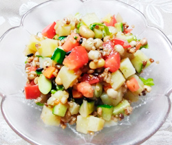

雑穀入りのチョップドサラダ
- 調理時間：20 分
- （一人当たり）
- カロリー：323kcal
- たんぱく質：7.6g
- 脂質：18.2g
- 炭水化物：32.7g
- 塩分：1.3g

＜2人分＞
- もち麦
- 大さじ2
- キヌア
- 大さじ1
- ジャガイモ
- 1個（100g)
- キュウリ
- 1本（100g)
- トマト
- 1個（150g)
- ミックスビーンズ
- 50g
- ・バルサミコ酢
- 大さじ2
- ・オリーブオイル
- 大さじ2
- ・塩
- 小さじ1/2
- ・コショウ
- 少々
A


- もち麦、キヌアはサッと洗う。
鍋にもち麦、キヌア、水、塩少々（分量外）を入れて強火にかける。
沸騰したら弱火にして10～15分茹でる。
ザルにあげて水気を切っておく。 - ジャガイモは丸ごとラップに包み、電子レンジ600wで２～3分、加熱する。
（かたさをみて時間は加減する）
粗熱がとれたら、サイコロ切りにする。 - キュウリ、トマトも大きさを揃えて、サイコロ切りにする。
- Aの材料を合わせ、ドレッシングをつくり、①～③の材料とミックスビーンズを合わせて全体を混ぜ合わせる。
雑穀入りのチョップドサラダ
もち麦やキヌアなどの雑穀はサラダやスープに入れてもプチプチ食感が面白く、栄養価もアップする優秀食材です。もち麦に含まれる大麦β-グルカンは水溶性食物繊維の一種でゲル状になって食べ物を包み、食後血糖値が急激に上昇することを抑えます。豊富に含まれる食物繊維は、腸内の善玉菌のエサとなり、腸内環境を改善させる効果があります。雑穀は炊いたものを冷凍保存できますので、雑穀初心者の方にもおすすめです。